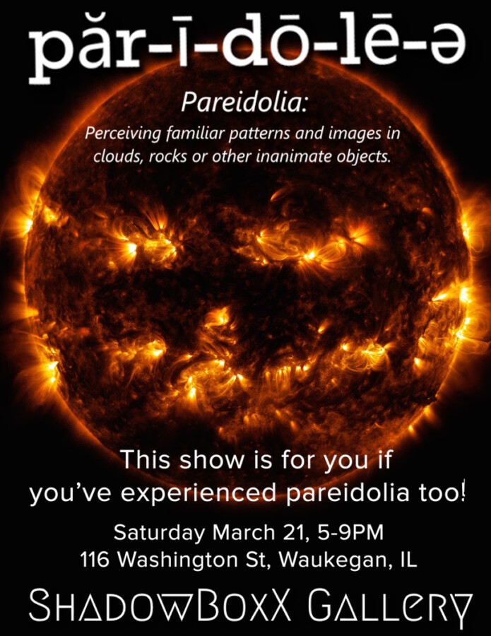

Pareidolia
Have you ever been just minding your own business…when suddenly you notice the dishwasher looking back at you, or that weird mark on the ceiling watching you?
That’s PAREIDOLIA – Perceiving patterns, faces, or forms in otherwise unremarkable, unrelated objects. Pareidolia can be funny, poignant, scary, or inscrutable. It’s up to you what you see!
ShadowBoxX is proud to present works from 50 selected artists who have captured this phenomenon through art. The Pareidolia Exhibition features paintings, drawings, carvings, stitchwork, assemblage, and prints. No digital, no AI, just hands and materials, juried by the ShadowBoxX Collective. This show is for you if you’ve experienced pareidolia too!
Pareidolia opens March 2026, from 5-9PM, in conjunction with the ArtWauk Celebration of the Arts.